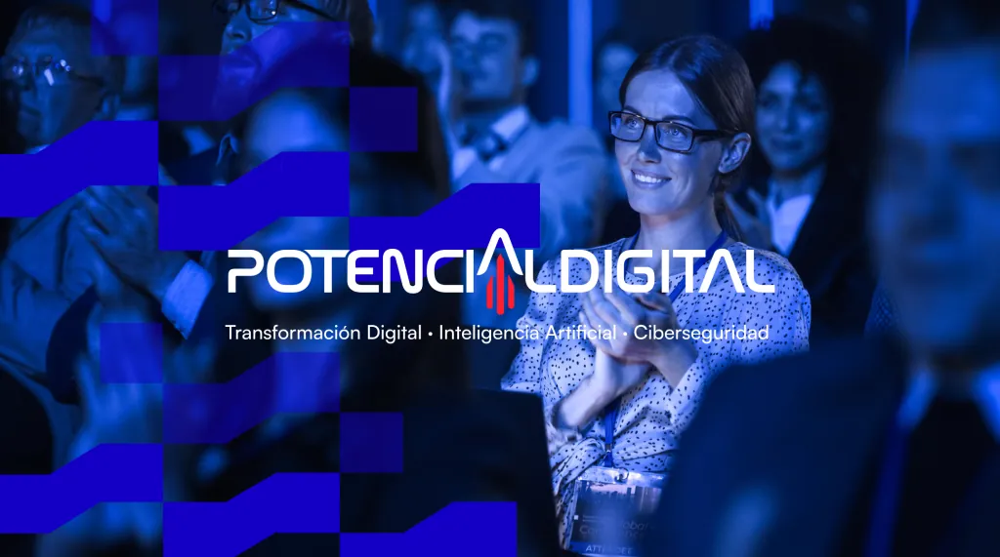
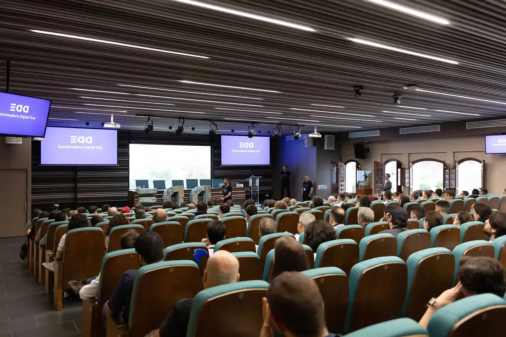

IT conferences, hackathons & community events in Cáceres, Extremadura

The 3rd Extremaduran Congress on Digital Transformation, AI, Cybersecurity and Robotics. Organised by FEVAL, CDTIC Extremadura and Extremadura Avante; headline sponsors include Telefónica, EY, Oracle, IBM, Google Cloud, Accenture and SAP. Side programme: startup pitch competition (cash prizes + sponsor services), Hack The Box ethical hacking challenges, kids' robotics workshops. Invited guest region: Andalucía. [1]

Extremadura's largest community-run tech conference. Multi-track programme curated via open CFP; talks 15–30 min in Spanish or English. EDD25 (Sep 2025, same venue) drew 400+ attendees — 80% professionals, 20% students. Speakers get dinner, meals and travel/accommodation covered. Student & visitor discount codes released 1 Sep. [3] [4]
| Organisation | Role | Notes |
|---|---|---|
| FUNDECYT-PCTEX | Science & Tech Park, incubator network | UEX campus, Cáceres [9] |
| COMPUTAEX / CénitS | Regional HPC centre; free AI, HPC & quantum training | Cáceres [10] |
| EDIH Tech4Efficiency | EU Digital Innovation Hub (€2M EC-funded) | Covers all Extremadura [11] |
| GDG Cáceres Dormant | Google Developer Group (399 Meetup members) | No events since Feb 2019 [12] |
| Palacio de Congresos | Main congress venue | Hosts Potencial Digital |
| Complejo Cultural San Francisco | Community event venue | Hosts EDD |
| Garaje 2.0 | Coworking & events space | Hosts Mobbeel hackathon |
UEX Polytechnic School in Cáceres approved new degrees in Computer Engineering and Telecommunication Technologies starting 2026/27, strengthening the local talent pipeline. [13]